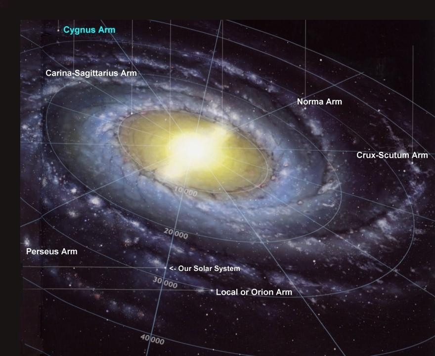
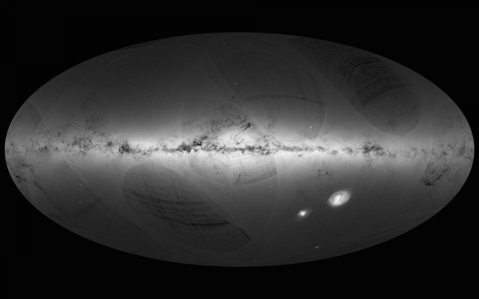

By Dhruva

Well, we don’t know it particularly well, that’s for sure. Because we’re sitting within the Galaxy, we don’t have a particularly helpful vantage point to see the rest of the Galaxy. We can take great images of other galaxies. Because we’re at quite a distance from them, we can get a good look at the whole galaxy. Trying to observe the shape of our own Galaxy is like staring at the edge of a cake, trying to figure out if the entire cake is square, round, or dinosaur-shaped.
Even though the shape of our Galaxy is still pretty fuzzily mapped, we’ve made great strides in determining its appearance. The first attempts to map out our Galaxy were done by William Herschel, who counted the number of stars that were in the sky. By looking at different patches of sky, and assuming that the areas of the sky with more stars had more galaxy behind them, he was able to draw the first map. This method led to a pretty irregular, simple-looking map of the Galaxy, particularly compared to the images we have now. We have to remember that this is the first time this map has ever been attempted, and the principle of this mapping was sound.
The key to any map is knowing where and how far from you any set of objects is. To find the distribution of stars and nebulae within our Galaxy, we need to know the exact positions in the sky, and the distances to a huge number of objects. Astronomical distance measurements are phenomenally difficult to undertake, because we can only do parallax measurements of stars easily for the nearest stars to our Earth. We also can’t see through stars to objects behind them, so the structure of the Galaxy on the other side of the galactic bulge - a massive swarm of stars, tightly clustered together, is fundamentally unmappable. For the far side of the Galaxy, we must interpolate, and set dotted lines instead of solid ones.
The vast majority of new stars in our Galaxy are formed within the spiral arms themselves, and so one slightly easier way to map out the nearby Galaxy is to measure the distances to various stellar nurseries. Stars are formed within clouds of dense gas, but after the stars ignite, they heat and blow away the remnants of that cloud of gas, producing what is visible to us on Earth as an region of glowing hydrogen. The Orion Nebula is one of the brightest of these, visible to the naked eye. With a radio telescope, you can survey the sky and measure the distances to these clouds. But as these nebulae are more commonly found in spiral arms than outside of them, this method only maps the brightest parts of the spiral arms and not the places between them.
Unfortunately, our solar system is in one of these in-between places, and so we are not surrounded with the density of nebulae that we would have, if we were within a spiral arm. We sit between two major spiral arms, in what has been called the Orion spur. In this space between spiral arms, measuring stars directly is a more complete way of mapping our local space. As limited as we are with parallax measurements, as our instrumentation improves, the distances to which we can extend our geometric measurements also improves.
So until relatively recently, we also thought our local spur of stars was fairly minor, a small assembly of stars, and nothing significant on the scale of the Galaxy. That view of our own neighborhood may also be changing, as a technique of linking radio telescopes together to improve their resolution managed to extend our parallax vision even farther. The results of a recent study showed a few years ago that our ‘spur’ is more substantially filled with stars than we had thought. Perhaps we sit in a minor spiral arm after all, which the authors dubbed the local arm
Since it’s quite difficult to use this direct measurement of apparent sideways motion to geometrically get a distance to a star, most of the time, we rely on velocity measurements of the star coming towards or away from us in the sky. This measurement means that sideways motion is mostly invisible to us, but with this measurement you can tell how stars are orbiting the center of our Galaxy. If you know the orbits of a very large number of stars, you can try to assemble them into a coherent picture of how the Galaxy must be constructed, since all the stars all belong to the same galaxy.
It wasn’t so many years ago that we didn’t realize that our Galaxy had a significant bar. One of the first suggestions for a larger bar came in 1996, when we had gotten a bit better at mapping out our spiral arms, and the authors of the paper suggested that the Galaxy would look way nicer if there was a large-ish bar in the middle; otherwise, we’d have four spiral arms which would have to rather inelegantly attach to a small bar in the middle. If there was a larger bar, then the Galaxy could really be a two armed galaxy, but with each arm wrapping around the galaxy twice. This larger bar was later confirmed to be present through other observational methods, and so we now illustrate maps of our Galaxy with a sizable bar spanning the middle.
Our maps of the Milky Way are due for a major overhaul in any case - the Gaia satellite just had its first major data release. Gaia is going to give us the largest and most accurate mapping of the stars near our solar system that has yet been constructed. By observing over a five year period, Gaia will give geometric distances to the nearest set of stars, and orbital speeds for the most distant set. With any major upgrade to our technique, there is a solid guarantee that there will be some revisions to our understanding to be had. We will definitely be updating our maps of the Milky Way after this mission